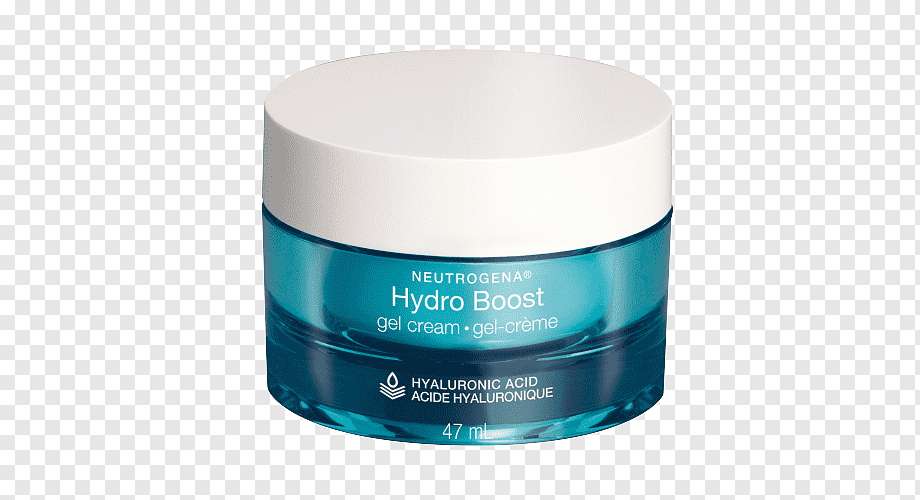

La hidratación facial es un tratamiento que consiste en renovar, nutrir e hidratar desde las capas más profundas. Con este tratamiento obtenemos un rostro más luminoso y con una textura mucho más suave y tersa. Tener una piel deshidratada trae consigo un aspecto de piel cansada y poco flexible.

proteccion solar
Los protectores solares son productos que se aplican en la piel con el propósito de impedir la penetración directa de los rayos ultravioleta, reduciendo los efectos que estos provocan para así evitar afecciones dermatológicas de mayor gravedad
¿Por que es importante la proteccion solar?
Los protectores contienen filtros que bloquean los rayos UVA y UVB y cuidan la piel de irritación, enrrojecimiento y alergias. Podes elegir entre las distintas variedades.
Sin protección solar, los rayos UVB podrían penetrar más profundamente en la piel y causar quemaduras solares